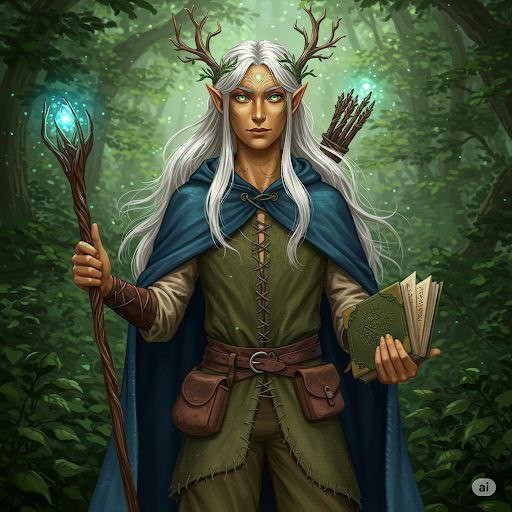

Аватар Героя 🖼
Біографія та Походження 📜
Файріель Лісосвітлий — лісовий ельф, народжений у чарівному лісі Сильварен під час рідкісного Цвітіння Місячної Ліани, що дарує дітям особливий зв’язок із природою. Від матері, провидиці Еліарель, він успадкував знання зілля та магії рослин, а від батька, стража стихій Талоріена — силу керувати елементами. У Великій Кроні, ельфійській академії, він вивчив мову духів природи, елементальну магію й давні руни. Під час пошуків рідкісного зілля Файріель заблукав і потрапив до Етельгарду — зраненої землі, де природа втратила голос. Не зважаючи на небезпеку, він вирішив допомогти: очистити води, зцілити ліси та відновити гармонію. Мудрий, добрий і таємничий, Файріель іде шляхом захисника природи, намагаючись зцілити не лише світ, а й самого себе.
Покинувши межі Сильварену, Файріель слідував за стародавніми зоряними картами, шукаючи корінь Літоніуса — рідкісну рослину, здатну лікувати гниль у серці дерев. Дорога пролягала через забуті стежки, де навіть птахи не співали. Одного вечора, коли небо раптово затягли хмари, а вітер приніс шепіт чужих голосів, він опинився в магічній бурі. Сила стихій змішалася з перекрученим чаклунством, і сам простір змістився. Світ навколо став іншим: повітря важке, дерева мовчазні, земля позбавлена пісні. Так Файріель опинився в Етельгарді — зраненій землі, що кликала про допомогу. Він зрозумів: це не випадковість, а поклик долі.
Характеристики та Здібності ⚔️✨
Риси Характеру:
- Мудрий 💪
- Добрий 🧠
- Таємничий ❤️
Ключові Здібності:
- Спілкування з тваринами та рослинами — розуміє й може говорити з живими істотами природи, від дерев до птахів.
- Керування стихіями — володіє магією природи: викликає вітер, керує водою, землею та вогнем у гармонії, а не руйнівно.
- Лікування природою — здатен зцілювати рани й хвороби за допомогою енергії лісу, трав і магічних ритуалів.
Мета в Етельґарді 🎯
Мета Файріеля — відновити гармонію природи в Етельґарді. Він допомагає Еларі, навчаючи її слухати землю, очищати джерела, викликати духів лісу та зцілювати зруйновані землі.
Я, Файріель (GitHub: Maria Turlyuk), присягаю допомагати Еларі та захищати Етельґард! 🛡